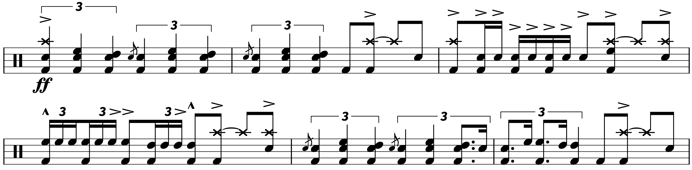

Transcription: “Amazing Journey” — Keith Moon with The Who
Posted on September 3, 2021

Ever since I wrote about Charlie Watts and Get Yer Ya–Ya’s Out! last week, I’ve been on a bit of a classic rock kick, especially with live albums. And so this week, I’m finally going to talk about Live at Leeds.
It’s hard to fully explain the impact this album has had on me as a drummer. Keith’s playing on this record is just out of this world. Keith is often regarded as a zany, fly–by–the–seat–of–his pants kind of player. But the closer attention I’ve paid to his drumming, the more I’ve appreciated his nuances, as well as how he navigated the arrangements with the rest of the band.
Moon is an undeniably entertaining drummer to listen to, and he also has some incredibly contagious passion and energy that can be tough to find in other players. Much like Charlie, I don’t think Moon ever phoned it in — they’re both the kind of musicians who felt like they owed their best performance to anyone who took the time to go see them play.
For me, Live at Leeds is the definitive Keith Moon experience. There’s an interesting background to the Live at Leeds album. The band had just gotten back from the US leg of their Tommy Tour, where most of the shows were recorded. However, nobody took notes on the quality of each performance. Instead of listening to all those tapes, Townshend orders them to be destroyed to keep them from being released as bootlegs.
Two shows were then booked to cut a live record: one at the city of Hull in northeastern England, and another at the University of Leeds. The band felt like the Hull concert was better overall in terms of fidelity and playing, but something went haywire with the bass tracks, so the Leeds show was released. If you look at the venue, it really is a dining hall more than so any sort of theater, which makes the fidelity of this recording even more impressive (you can check out some more photos of the concert here).
While I have the original 6 track vinyl release from my dad’s record collection, my first exposure to Live at Leeds was the 14 track CD that was released in 1995. Listening to that version of the album, I always considered the “Amazing Journey/Sparks” medley to be the centerpiece of the concert, so I’m going to look at “Amazing Journey” today.
I went through a sort of Who renaissance in high school when I discovered Live at the Isle of Wight as a junior. It was then I realized that the band played over 30 songs for the Leeds concert; turns out Live at Leeds had been released for the third time back in 2001, featuring all songs from the gig. However, I was frustrated by the format: the album was split up into two discs, with disc two being all the songs from Tommy and disc one being everything else. The thing is, that’s not the order the band played the tunes in for that show (to further convolute things, this version was released one more time in 2010 as the 40th Anniversary Collectors’ Edition to feature all the songs from the Hull concert with salvaged bass; eventually this gig was released as its own album).
I got ahold of the 2001 version from a family member (another longtime Who fan), and my intention was to rip the two CDs and reorder the tracks in iTunes. Well, in the middle of that project, Live at Leeds was reissued for the fifth(!) time, featuring all 33 songs in the original order. This version (the Deluxe Edition from 2014) is the only release anyone should bother with these days (it looks like it’s only available to stream on Apple Music). Interestingly, you can find the older reissues on streaming sites — in fact, the only version that’s totally missing is the original vinyl.
As I was navigating all these different releases, I discovered that parts of the Leeds show were actually filmed. You can watch some of that footage here if you have a FaceBook account.
After digging that video up all these years later, I immediately became interested in where the footage came from. The FaceBook page that shared the video is run by TheWho.net, an old Who fansite. Someone explained in the comments that the video came from “the Amazing Journey DVD that was released in Japan”.
My dad picked up that DVD when it came out back in 2007, but I don’t remember hearing anything about Live at Leeds footage. I wound up tracking down an article from Record Collector Magazine that explains the story:
In 2007, a two-disc DVD history of The Who titled Amazing Journey was compiled. While researching this project, previously unseen cine film of the Leeds show surfaced. Co–director and editor Paul Crowder explained to Ken Sharp in RC issue 344: “That was found during Murray Lerner’s (who directed the Isle Of Wight 1970 footage) research. Apparently, some guy was emptying a trash can at the university, throwing out some old stuff, and he came across this film canister. It’s four and half minutes of Super 8 footage. It has no sound, but now we have the complete concert we were able to find the segments and sync it up.” The surviving footage with synched sound was included in the Japanese repackage of Amazing Journey.
So there you have it. Long lost footage of one of the greatest moments in rock finally resurfaces… only to be released exclusively in Japan. o_O
I found a Discogs page about this obscure 4 disc DVD. One of the comments there goes into detail explaining how rare this DVD is. I then found a listing on some website for the DVD. I translated the back of the case, which proudly displays “Japanese Version only: legendary Leeds university public performance” as well as “Disc 3: Live at Leeds 1970 (Special Release for Japanese Version Only)”.
The website I found makes it seem like it’s for sale: £70 plus £20 shipping. No idea if you can actually get ahold of it. As big of a Who fan as I am… $130+ is a bit too much for five minutes of footage.
The video was once available on YouTube, but it has since been taken down — a rare moment of copyright actually being enforced on the Who. I won’t debate the philosophy of enforcing copyright, but it’s very frustrating when something gets pulled that you can’t get through official channels. It’s not like I can go buy this DVD on the Who’s online store or anything.
Anyhoo, let’s finally talk about the song. I started by transcribing the big triplet hits Keith uses to really kick the song off. At first, it sounded like an extra note had been added in. In my naïveté, I thought Keith had just miscounted. But after giving the song a closer listen, I realized that the main riff of the song actually starts on the “+” after three. It’s a bit disorienting, so I included the intro chords.
The drum entrance is quite ferocious, but notice how Moon simplifies things during the drum solos with those big quarter note triplets. It might not sound as exciting to a drummer, but for the general audience, I certainly think it’s more impactful. Also, check out the swung notes Moon uses during the second round of triplet hits:
Keith uses some familiar moves during his grooves: steady 8ths on the double kick, with some four–stroke ruffs/“Single Stroke Fours” added in on the toms. After the first chorus, Moon uses a double–time esque groove, playing quarters on the snare and 8th note offbeats on the kick.
Keith takes advantage of the space during the chorus to dish out some savage fills, including some fast 16th note triplets:

I took a look at the first ~3 minutes of the tune. The second half of “Amazing Journey” includes a heavy instrumental, which segues directly into “Sparks”*. I didn’t get a chance to look at it all this week, but I expect that I’ll revisit this album in the future.
I feel kind of weird ignoring the studio version of this tune off of Tommy, since that album really was a breakthrough for the Who and is a very ambitious piece of work. The band’s songwriting comes through very well on Tommy, but their performances… I dunno. I’m not sure the album does the entirety of the band justice, and I think the band agrees since that was part of the impetus for doing a live album. Keith’s drumming in particular feels a bit stifled, and his drums don’t sound very good either (I can’t help but feel like Tommy is a bit overproduced). Whatever, I’m still grateful the album exists.
*The versions of Live at Leeds from 2001 onwards have a mastering blunder: “Sparks” starts too early. You can compare it to the studio version to hear what the beginning of “Sparks” is supposed to sound like.
Tags: 2021 • Transcription • Keith Moon • The Who